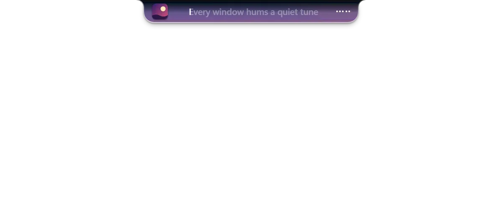
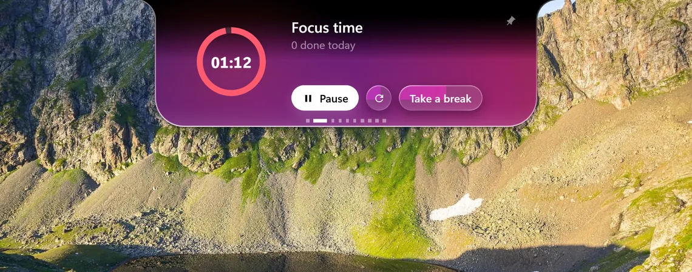
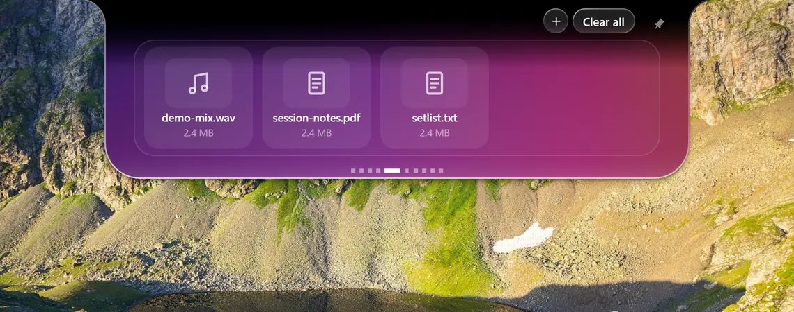
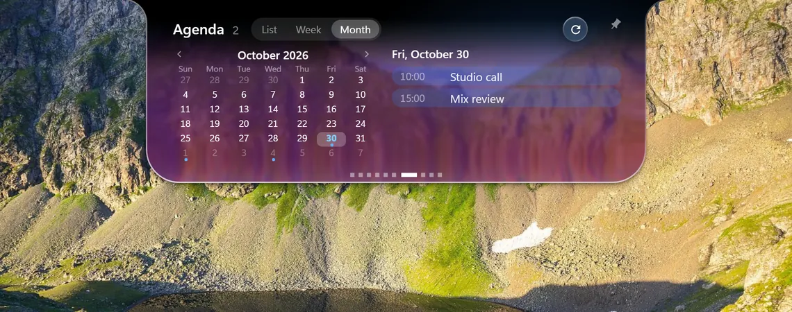
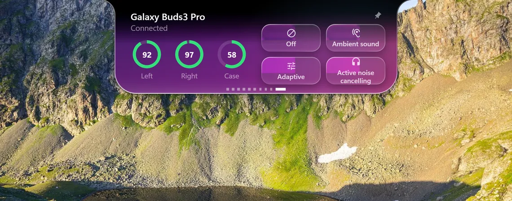
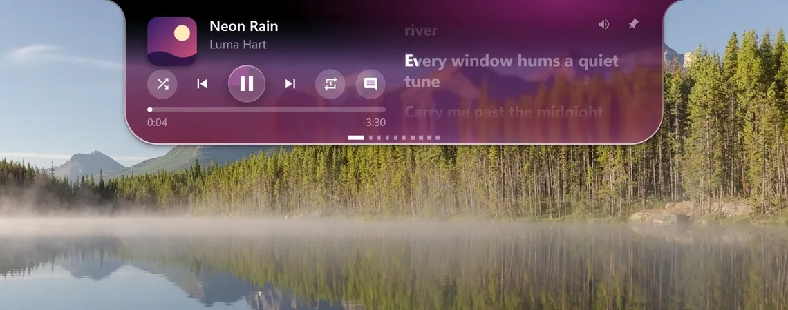
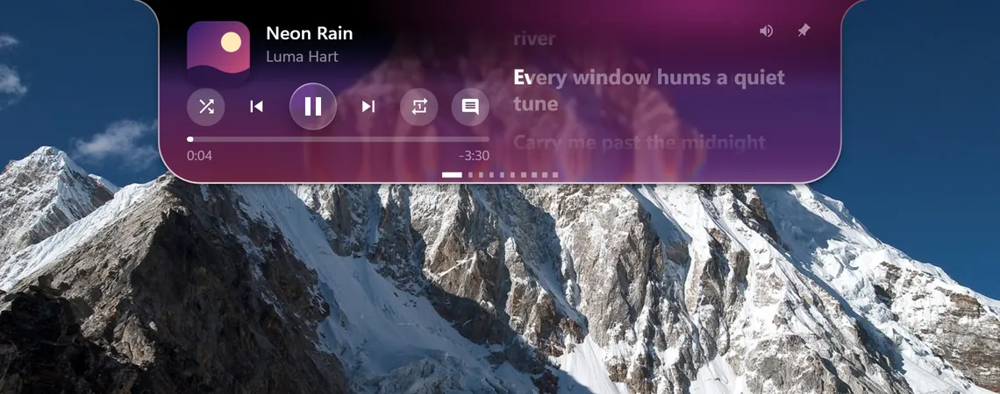
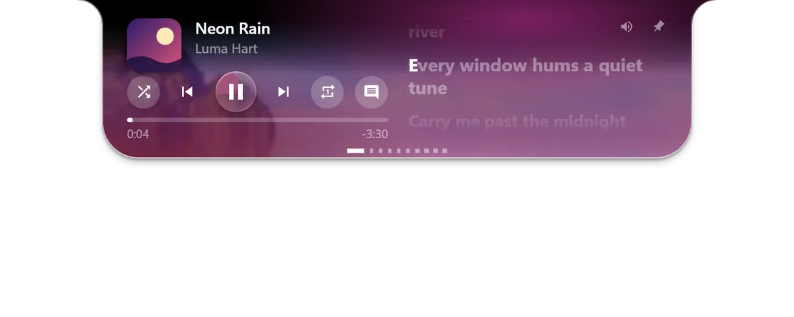
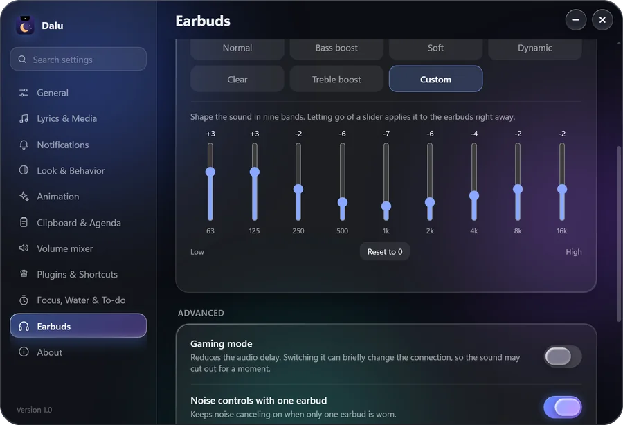
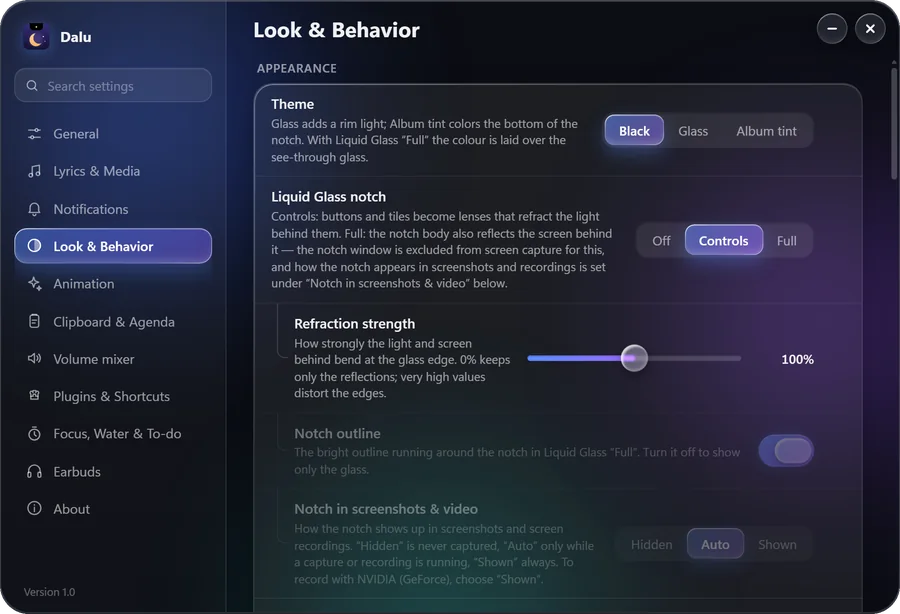

The top of your screen, finally alive.
A Windows notch for music, lyrics and timers, one hover away.

Lyrics that follow the voice.
Streetlights bloom along the river.
Every window hums a quiet tune.
Carry me past the midnight bridges.
Word by word, whenever the song carries timing data.
Five pages. One notch.

Every word on time.
When a song has timing data, each word lights up as it is sung.

Stay on one thing.
Pomodoro, timer, water and to-do, all inside the notch.

Drop it. Carry it.
Park a file on the notch, then drag it into any window.

Today at a glance.
Paste a calendar link (.ics). Read it by list, week or month.

Calm, in one tap.
Switch the noise control on your Galaxy Buds without opening a thing.
Plain black. Or liquid glass.
Scroll to slide between the two.

Glass that bends the world behind it.
Choose any wallpaper. The notch refracts what is behind it.





Hover the dots. Pick a tab.
Small dots turn into tab icons the moment you point at them.
Nine bands. Your sound.
Tune the equalizer, switch on gaming mode, or keep noise control on with one earbud in. Tested on Buds3 Pro only.

Make it yours.
Over a hundred settings, four languages, and plugins written in plain JSON.

Get Dalu. It's free.
Windows 10 (2004 or later) or 11. No account, no tracking.
- Install
- No administrator rights needed.
- Verify
- SHA-256 checksums sit on the download page.
- License
- Source-available, noncommercial use (PolyForm Noncommercial 1.0.0).
Not code-signed, so Windows SmartScreen may warn the first time.